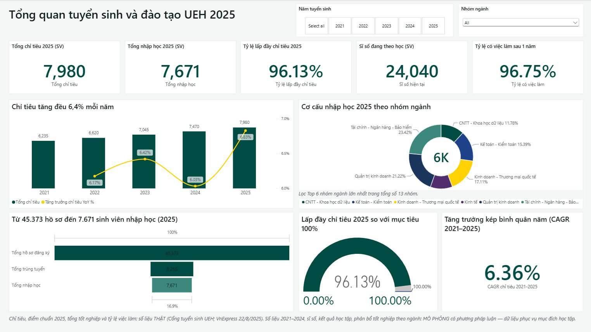

UEH Admissions Analytics
Power BI, DAX, Power Query, Excel
Admissions and graduate outcomes for 59 programmes at UEH, 2021-2025, turned into 3 interactive dashboards for leadership, admissions and academic affairs.
Team of 3. I built the whole analytical product:
- Designed the dataset from public 2025 figures plus documented simulated history
- Cleaned and shaped 10 tables in Power Query
- Modelled a star schema: 4 dimensions, 6 facts, 11 relationships
- Wrote 35 DAX measures and validated key KPIs against Excel
- Designed the dashboards with drill-through, tooltips and bookmarks
